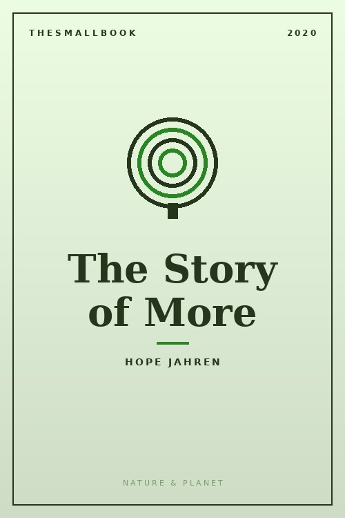

Library › Nature & Planet
The Story of More - Summary & Key Lessons

How we got to climate change and where to go from here.
📖 OPEN THE FULL INTERACTIVE BREAKDOWN →🌐 Read it in Hindi, Hinglish, Gujarati, Tamil & 22 more languages, with audio.
💡 The Big Idea
Geochemist Hope Jahren tells the story of the last fifty years through things: population, grain, livestock, cars, electricity, waste. Each short chapter pairs warm memoir with hard numbers showing how consumption, not just population, drives climate change, and how the richest fraction drives most of it. She refuses despair and easy villains alike, ending with an audit each reader can run on their own life: use less, share more, and convert values into habits.
🧠 The 8 Key Lessons
Lesson 1: More Is a Recent Invention
Our Story Begins and Growing Up
Hope Jahren anchors the book in her own lifetime: since 1969 the world doubled its people, tripled its grain harvest, and multiplied its energy use, mostly so a minority could have meat at every meal, bigger houses and second cars. The numbers are not presented as accusation but as biography: this is the world her generation built, gift by gift and habit by habit. Seeing more as a fifty year experiment, rather than human nature, makes changing it imaginable.
📖 Example: She notes that in 1969 the average American home, car and diet were all markedly smaller, and their owners were not monks; they simply had not yet been told by every screen that more was normal. Consumption norms, being learned, can be relearned. That is the book's buried optimism. Read the full example →
⚡ Do this: Pick one category, food, flights, stuff, and compare your household's normal to the 1969 version. Choose one line to move first.
Lesson 2: Food Is the Climate Story You Eat Daily
Eating and Moving
Hope Jahren gives food the longest treatment: grain diverted to livestock, meat's land and methane costs, a third of food wasted while people hunger. Her numbers make lunch a climate act, not to guilt the reader but to locate agency: few choices repeat as often as eating, and small shifts compound like interest. She is notably fair, distinguishing the subsistence eater from the rich world's appetite, and aiming her argument at the second.
📖 Example: The wasted third haunts her chapters: enough calories thrown away in rich countries to erase hunger several times over, requiring no new farms, only logistics and respect. She frames waste reduction as the climate policy with no enemies. Read the full example →
⚡ Do this: For one week, waste no food: plan, freeze, repurpose. Weigh or photograph what you save. It is the easiest climate number you own.
Lesson 3: The Cure Is Values, Audited, Not Guilt, Accumulated
Where Do We Go From Here
The closing chapters refuse the two common exits, despair and denial, and prescribe an audit: learn your numbers, decide what you actually value, and cut the consumption that serves nothing you value. Hope Jahren is a scientist insisting the crisis is spiritual in structure: we will not fix the atmosphere while our definition of a good life keeps expanding materially. Her final tone is invitational, curriculum style, questions for classrooms and kitchens rather than commandments.
📖 Example: She describes writing her own inventory, where her family burned carbon on things she loved and things she merely defaulted into, and cutting the second list first. Most readers find the same asymmetry: the defaults, not the joys, are the fat in the ledger. Read the full example →
⚡ Do this: Run the audit this month: list your top ten consumption joys and top ten defaults. Cut two defaults permanently.
Lesson 4: Population Is Not the Villain of the Piece
From the Beginning
Hope Jahren is careful with the oldest climate scapegoat: yes, people doubled, but consumption multiplied faster, and its distribution is grotesquely uneven. The richest countries burn many times their share; within them, the richest burn most. Aiming policy at the poor world's families while sparing the rich world's appetites fails arithmetically and morally at once. Her ledger keeps returning the reader to the mirror with the highest numbers in it.
📖 Example: She pairs two newborns, one in a high consumption country, one in a low, and follows their statistical shadows across a lifetime. The gap between the shadows is the book's whole argument in one image, and it is why her solutions are addressed to shoppers, not to mothers. Read the full example →
⚡ Do this: Look up your country's per person footprint against the world average this week. Keep the ratio where you plan purchases.
Lesson 5: Energy: Every Convenience Has a Biography
Moving and Lighting
Hope Jahren traces electricity and fuel from source to socket with a memoirist's touch: her father's physics lab, her own furnaces and field stations. The chapters demystify the grid just enough for agency, what a kilowatt hour is, where yours comes from, what the standby lights of a house consume while it sleeps. Her claim is that people protect what they understand, and we have been trained to understand energy as magic rather than as biography.
📖 Example: She calculates the energy biography of ordinary objects, the hot shower, the imported berry, until the reader can no longer unsee them. Literacy, not guilt, is the product; the behaviour changes follow at their own pace and tend to stay changed. Read the full example →
⚡ Do this: Read your electricity bill properly once: units, sources if listed, trend. Then hunt the standby loads in one room.
Lesson 6: Waste Is the Confession Our Bins Make
Throwing Away
The final ledger is rubbish: what a household throws away declares its real values more honestly than its recycling pride. Hope Jahren follows waste streams from her own bin to landfills and oceans, and finds the same asymmetry as everywhere in the book: the problem is not existence of waste but its scale and carelessness at the rich end. Her remedy is unfashionable and total: buy less, keep longer, repair, and let the bin shrink as a side effect.
📖 Example: She audits her laboratory and home, finding disposables chosen by default decades ago still flowing. Changing the defaults, glass for plastic, repair for replacement, cut the stream more than any single heroic act, a finding every facilities manager will recognise. Read the full example →
⚡ Do this: Weigh or bag count your household waste for one week. Then change one default and measure the next week's confession.
Lesson 7: The Ethics of the Second Helping: Enough as a Number
The Way Through
Jahren refuses purity frameworks because she has run the arithmetic: global problems are aggregates of proximate decisions multiplied by billions, and shame does not scale while small numbers do. A reduction here, a waste stream closed there, multiplied honestly, outperforms sporadic grand gestures mathematically and psychologically. Deepening means converting her tables into your household's two or three largest numbers and ignoring the rest until those move. Activism triages: the top of your personal ledger is where your morality actually lives.
📖 Example: Her own readers report the meat and food waste chapters rearranged kitchens more than air travel essays rearranged holidays, which matches her data: the daily, invisible streams outweigh the annual spectacular ones. The book's gentleness is tactical; it aims the effort where the tonnes are hiding. Read the full example →
⚡ Do this: From her categories, find your household's single largest stream, food waste, energy, or miles, and cut it by a measured quarter for one quarter. Record the number, not the virtue.
Lesson 8: Teaching the Numbers to Children Without Terror
The Way Through
As a teacher, Jahren models the pedagogy her subject demands: facts delivered with their uncertainties visible, hope grounded in real margins, agency assigned at the scale a student can actually move. Deepening means refusing both available corruptions, doom that licenses despair and denial that licenses delay, in your own explanations to the young. Her classroom rule translates directly: never hand someone a problem larger than the lever you hand them with it, and always hand a lever cut to fit their actual reach.
📖 Example: Her students leave able to compute their own consumption from first principles, a skill she considers more protective than any list of commandments. Alumni describe the strange calm of the method: the crisis stops being weather reported by enemies and becomes engineering they can personally interrogate, which is the exact moment fatalism loses its market. Read the full example →
⚡ Do this: Explain one climate number to a young person this week with Jahren's rule: one fact, one uncertainty, one lever sized to their reach. Watch their face for the difference.
✅ 5-Step Action Plan
- Compare one household normal to 1969; move one line.
- Waste no food for one week; track what you save.
- Audit joys versus defaults; cut two defaults permanently.
- Shift one recurring meal per week down the carbon ladder.
- Learn your electricity mix; switch one load to off-peak or off.
- Talk numbers kindly at one family meal; no guilt served.
- Share: lend, borrow or give one thing monthly instead of buying.
⚠️ When This Doesn't Work
Statistics date from its 2020 research; the trends continue but readers should refresh the numbers. Hope Jahren writes as an American scientist to general readers; policy depth lives in other books on this shelf.
💀 The Graveyard Proves It
💬 Best Quotes from The Story of More
- “The way we have been living is not sustainable, and we know it. The question is what we are willing to change.”
- “Every choice we make is a vote for the world we want to live in, whether we admit it or not.”
- “You do not have to be perfect. You have to start, and keep starting.”
Interactive version: mark lessons as read, listen in your language, share quote cards.